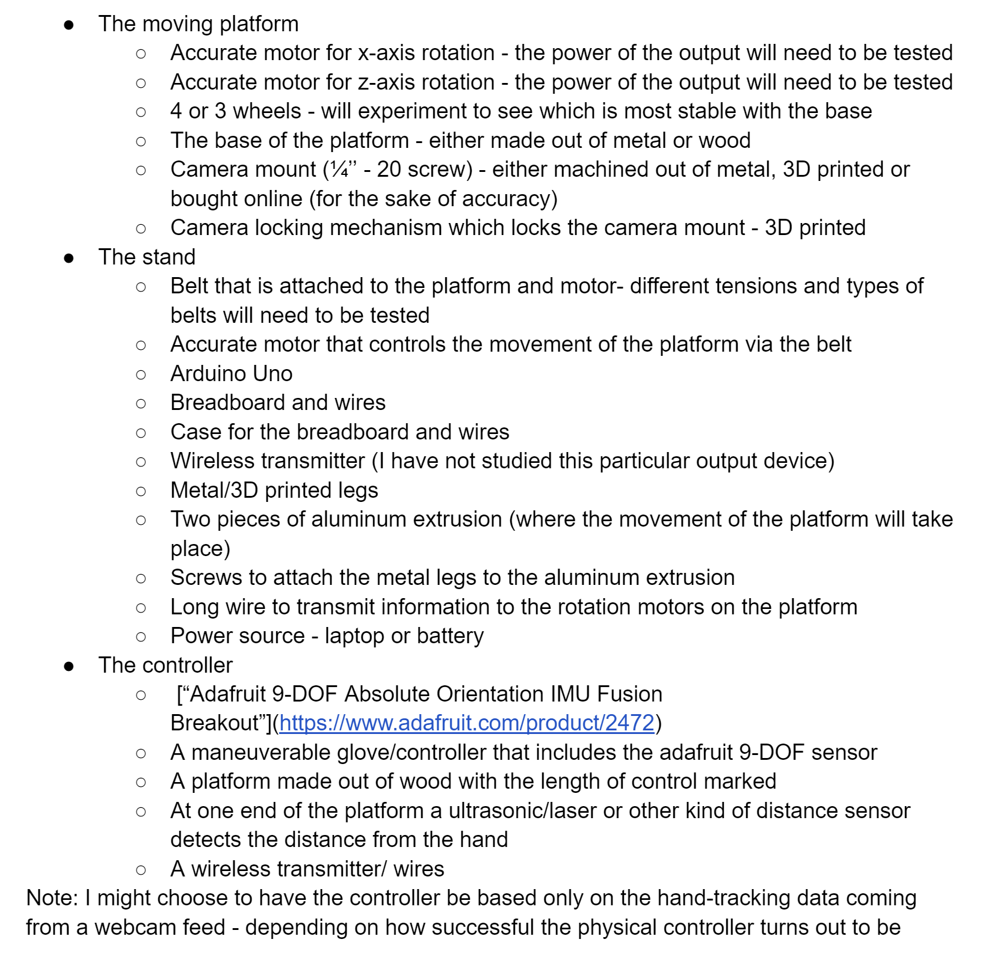

#This week's assignment
In this week’s assignment, we had to use the Arduino board to make a couple electrical components do something. After learning the basics of C programming, I came up with a basic idea of a program that, depending on the output from an ultrasonic distance sensor, will light up more or less light bulbs that are placed in a sequence. A similar concept is usually implemented with distance sensors on cars, as it is a good visual aid for drivers to understand the distance of the car from the nearest object.
##The schematic
But first, I knew I had to draw a schematic diagram for my project that I would then implement using a breadboard. I used [this website](https://www.circuit-diagram.org/) to draw it, as it was intuitive and had all the necessary components. To summarize, I connected each LED to a pin from the Arduino Uno (that would eventually be set as output) and then connected it to the ground using a 10k ohms resistor. Then, I connected the “VCC” to the 5V power supply pin, the “GND” to the ground, and the other two (the “TRIG” and “ECHO”) to two other pins that would eventually be set as input pins. Below, the sketch of the “machine” can be observed, as well as the final, wired machine (which did not respect the exact pins that were in the scheme due to convenience).
<div class="two-image-row">
<img src="./Images_Week_5/Wire sketch.PNG" class="half-width-image"/>
<img src="./Images_Week_5/Screenshot_20221004-142449_Video Player.jpg" class="half-width-image"/>
</div>
##The code
While this week I learned object oriented programming in C#, it did not need it for my idea.
I knew that fundamentally, my code would need to take the information from the ultrasonic sensor, process it, and then output signals to light up or close the different light bulbs. Below you can see the code of the setup function, where I assign all the pins.
<pre>
<font color="#00979c">void</font> <font color="#5e6d03">setup</font><font color="#000000">(</font><font color="#000000">)</font> <font color="#000000">{</font>
&nbsp;<font color="#d35400">pinMode</font><font color="#000000">(</font><font color="#000000">trigPin</font><font color="#434f54">,</font> <font color="#00979c">OUTPUT</font><font color="#000000">)</font><font color="#000000">;</font>
&nbsp;<font color="#d35400">pinMode</font><font color="#000000">(</font><font color="#000000">echoPin</font><font color="#434f54">,</font> <font color="#00979c">INPUT</font><font color="#000000">)</font><font color="#000000">;</font>
&nbsp;<font color="#d35400">pinMode</font><font color="#000000">(</font><font color="#000000">green1Pin</font><font color="#434f54">,</font> <font color="#00979c">OUTPUT</font><font color="#000000">)</font><font color="#000000">;</font>
&nbsp;<font color="#d35400">pinMode</font><font color="#000000">(</font><font color="#000000">green2Pin</font><font color="#434f54">,</font> <font color="#00979c">OUTPUT</font><font color="#000000">)</font><font color="#000000">;</font>
&nbsp;<font color="#d35400">pinMode</font><font color="#000000">(</font><font color="#000000">yellowPin</font><font color="#434f54">,</font> <font color="#00979c">OUTPUT</font><font color="#000000">)</font><font color="#000000">;</font>
&nbsp;<font color="#d35400">pinMode</font><font color="#000000">(</font><font color="#000000">bluePin</font><font color="#434f54">,</font> <font color="#00979c">OUTPUT</font><font color="#000000">)</font><font color="#000000">;</font>
&nbsp;<b><font color="#d35400">Serial</font></b><font color="#434f54">.</font><font color="#d35400">begin</font><font color="#000000">(</font><font color="#000000">9600</font><font color="#000000">)</font><font color="#000000">;</font>
<font color="#000000">}</font>
</pre>
###Finding ways to interpret the distance sensor
I did not know, however, how to interpret the “TRIG” and “ECHO” information that was coming from the sensor. So I did some research, and found [this website](https://howtomechatronics.com/tutorials/arduino/ultrasonic-sensor-hc-sr04/). I learned that one of the two cylindrical units (the one named “TRIG”) is the one that sends the ultrasonic signal, and the other is the one that measures the time taken for the wave to reflect back. You first need to enable the ultrasonic waves, so that the sensor can have something to measure.
<pre>
&nbsp;<font color="#d35400">digitalWrite</font><font color="#000000">(</font><font color="#000000">trigPin</font><font color="#434f54">,</font> <font color="#00979c">LOW</font><font color="#000000">)</font><font color="#000000">;</font>
&nbsp;<font color="#d35400">delayMicroseconds</font><font color="#000000">(</font><font color="#000000">2</font><font color="#000000">)</font><font color="#000000">;</font>
&nbsp;<font color="#d35400">digitalWrite</font><font color="#000000">(</font><font color="#000000">trigPin</font><font color="#434f54">,</font> <font color="#00979c">HIGH</font><font color="#000000">)</font><font color="#000000">;</font>
&nbsp;<font color="#d35400">delayMicroseconds</font><font color="#000000">(</font><font color="#000000">10</font><font color="#000000">)</font><font color="#000000">;</font>
&nbsp;<font color="#d35400">digitalWrite</font><font color="#000000">(</font><font color="#000000">trigPin</font><font color="#434f54">,</font> <font color="#00979c">LOW</font><font color="#000000">)</font><font color="#000000">;</font>
</pre>
Interpreting that output is based on the fundamental physics property that speed is equal to distance divided by the time. Hence we know the sensor’s wave’s speed and the time it takes to reach it and reflect it back, we can find out the distance.
<pre>
&nbsp;<font color="#000000">duration</font> <font color="#434f54">=</font> <font color="#d35400">pulseIn</font><font color="#000000">(</font><font color="#000000">echoPin</font><font color="#434f54">,</font> <font color="#00979c">HIGH</font><font color="#000000">)</font><font color="#000000">;</font>
&nbsp;<font color="#000000">distance</font> <font color="#434f54">=</font> <font color="#000000">duration</font> <font color="#434f54">*</font> <font color="#000000">0.034</font> <font color="#434f54">&#47;</font> <font color="#000000">2</font><font color="#000000">;</font>
</pre>
While I understand the code in its entirety, I copied most of it, and made sure to credit the creator in my Code.
###The implementation of input and output devices
After getting the distance from the sensor, all I had to do was write a couple “if”statements that activated certain light bulbs at certain distances from the obstacle. For example, if the distance was over 20 but under 30, only the first two bulbs can light up. The code below shows the if statements.
<pre>
&nbsp;<font color="#5e6d03">if</font> <font color="#000000">(</font><font color="#000000">distance</font> <font color="#434f54">&lt;=</font> <font color="#000000">5</font><font color="#000000">)</font><font color="#000000">{</font>
&nbsp;&nbsp;&nbsp;<font color="#d35400">digitalWrite</font><font color="#000000">(</font><font color="#000000">green1Pin</font><font color="#434f54">,</font> <font color="#00979c">HIGH</font><font color="#000000">)</font><font color="#000000">;</font>
&nbsp;&nbsp;&nbsp;<font color="#d35400">digitalWrite</font><font color="#000000">(</font><font color="#000000">green2Pin</font><font color="#434f54">,</font> <font color="#00979c">HIGH</font><font color="#000000">)</font><font color="#000000">;</font>
&nbsp;&nbsp;&nbsp;<font color="#d35400">digitalWrite</font><font color="#000000">(</font><font color="#000000">yellowPin</font><font color="#434f54">,</font> <font color="#00979c">HIGH</font><font color="#000000">)</font><font color="#000000">;</font>
&nbsp;&nbsp;&nbsp;<font color="#d35400">digitalWrite</font><font color="#000000">(</font><font color="#000000">bluePin</font><font color="#434f54">,</font> <font color="#00979c">HIGH</font><font color="#000000">)</font><font color="#000000">;</font>
&nbsp;&nbsp;&nbsp;&nbsp;&nbsp;<font color="#000000">}</font>
&nbsp;&nbsp;<font color="#5e6d03">else</font> <font color="#5e6d03">if</font> <font color="#000000">(</font><font color="#000000">distance</font> <font color="#434f54">&lt;=</font> <font color="#000000">10</font><font color="#000000">)</font><font color="#000000">{</font>
&nbsp;&nbsp;&nbsp;<font color="#d35400">digitalWrite</font><font color="#000000">(</font><font color="#000000">green1Pin</font><font color="#434f54">,</font> <font color="#00979c">HIGH</font><font color="#000000">)</font><font color="#000000">;</font>
&nbsp;&nbsp;&nbsp;<font color="#d35400">digitalWrite</font><font color="#000000">(</font><font color="#000000">green2Pin</font><font color="#434f54">,</font> <font color="#00979c">HIGH</font><font color="#000000">)</font><font color="#000000">;</font>
&nbsp;&nbsp;&nbsp;<font color="#d35400">digitalWrite</font><font color="#000000">(</font><font color="#000000">yellowPin</font><font color="#434f54">,</font> <font color="#00979c">HIGH</font><font color="#000000">)</font><font color="#000000">;</font>
&nbsp;&nbsp;&nbsp;<font color="#d35400">digitalWrite</font><font color="#000000">(</font><font color="#000000">bluePin</font><font color="#434f54">,</font> <font color="#00979c">LOW</font><font color="#000000">)</font><font color="#000000">;</font>
&nbsp;&nbsp;&nbsp;<font color="#000000">}</font>
&nbsp;&nbsp;&nbsp;<font color="#5e6d03">else</font> <font color="#5e6d03">if</font> <font color="#000000">(</font><font color="#000000">distance</font> <font color="#434f54">&lt;=</font> <font color="#000000">20</font><font color="#000000">)</font><font color="#000000">{</font>
&nbsp;&nbsp;&nbsp;<font color="#d35400">digitalWrite</font><font color="#000000">(</font><font color="#000000">green1Pin</font><font color="#434f54">,</font> <font color="#00979c">HIGH</font><font color="#000000">)</font><font color="#000000">;</font>
&nbsp;&nbsp;&nbsp;<font color="#d35400">digitalWrite</font><font color="#000000">(</font><font color="#000000">green2Pin</font><font color="#434f54">,</font> <font color="#00979c">HIGH</font><font color="#000000">)</font><font color="#000000">;</font>
&nbsp;&nbsp;&nbsp;<font color="#d35400">digitalWrite</font><font color="#000000">(</font><font color="#000000">yellowPin</font><font color="#434f54">,</font> <font color="#00979c">LOW</font><font color="#000000">)</font><font color="#000000">;</font>
&nbsp;&nbsp;&nbsp;<font color="#d35400">digitalWrite</font><font color="#000000">(</font><font color="#000000">bluePin</font><font color="#434f54">,</font> <font color="#00979c">LOW</font><font color="#000000">)</font><font color="#000000">;</font>
&nbsp;&nbsp;&nbsp;<font color="#000000">}</font>
&nbsp;&nbsp;&nbsp;<font color="#5e6d03">else</font> <font color="#5e6d03">if</font> <font color="#000000">(</font><font color="#000000">distance</font> <font color="#434f54">&lt;=</font> <font color="#000000">30</font><font color="#000000">)</font><font color="#000000">{</font>
&nbsp;&nbsp;&nbsp;<font color="#d35400">digitalWrite</font><font color="#000000">(</font><font color="#000000">green1Pin</font><font color="#434f54">,</font> <font color="#00979c">HIGH</font><font color="#000000">)</font><font color="#000000">;</font>
&nbsp;&nbsp;&nbsp;<font color="#d35400">digitalWrite</font><font color="#000000">(</font><font color="#000000">green2Pin</font><font color="#434f54">,</font> <font color="#00979c">LOW</font><font color="#000000">)</font><font color="#000000">;</font>
&nbsp;&nbsp;&nbsp;<font color="#d35400">digitalWrite</font><font color="#000000">(</font><font color="#000000">yellowPin</font><font color="#434f54">,</font> <font color="#00979c">LOW</font><font color="#000000">)</font><font color="#000000">;</font>
&nbsp;&nbsp;&nbsp;<font color="#d35400">digitalWrite</font><font color="#000000">(</font><font color="#000000">bluePin</font><font color="#434f54">,</font> <font color="#00979c">LOW</font><font color="#000000">)</font><font color="#000000">;</font>
&nbsp;&nbsp;&nbsp;<font color="#000000">}</font>
&nbsp;&nbsp;&nbsp;<font color="#5e6d03">else</font> <font color="#000000">{</font>
&nbsp;&nbsp;&nbsp;<font color="#d35400">digitalWrite</font><font color="#000000">(</font><font color="#000000">green1Pin</font><font color="#434f54">,</font> <font color="#00979c">LOW</font><font color="#000000">)</font><font color="#000000">;</font>
&nbsp;&nbsp;&nbsp;<font color="#d35400">digitalWrite</font><font color="#000000">(</font><font color="#000000">green2Pin</font><font color="#434f54">,</font> <font color="#00979c">LOW</font><font color="#000000">)</font><font color="#000000">;</font>
&nbsp;&nbsp;&nbsp;<font color="#d35400">digitalWrite</font><font color="#000000">(</font><font color="#000000">yellowPin</font><font color="#434f54">,</font> <font color="#00979c">LOW</font><font color="#000000">)</font><font color="#000000">;</font>
&nbsp;&nbsp;&nbsp;<font color="#d35400">digitalWrite</font><font color="#000000">(</font><font color="#000000">bluePin</font><font color="#434f54">,</font> <font color="#00979c">LOW</font><font color="#000000">)</font><font color="#000000">;</font>
&nbsp;&nbsp;&nbsp;<font color="#000000">}</font>
</pre>
After fixing some coding errors, I uploaded the code, and it worked. Here is a video bellow showcasing the machine.
<div class = "flex-center-full-size">
<img src="./Images_Week_5/Final_project.gif">
</div>
#Update on my final project
For last week’s assignment, we were also asked to pre-plan our final project and state the bill of materials, timeline and project plan. I decided to make this plan this week, as I didn’t feel like I had enough knowledge last week to create a plan for my final project. I decided that for my final project, I will be pursuing my first idea - that of a slider controlled by a hand remotely. I started by first breaking down all the important elements that I would need for my final project, and then created a timeline for the production of the machine.
##Bill of materials
<div class = "flex-center-full-size">

</div>
##Timeline
####I am planning to build this project from the beginning of week 10 all the way through the end of week 15.
#####• In [week 11](./Week_11.html), I would like to design and build the moving platform.
#####• In [week 12](./Week_12.html), I would like to create the stand, and make sure that the platform and the stand can work together effectively with the motors.
#####• In [week 13](./Week_13.html), I will create the controller and make sure it can control 3D objects effectively.
#####• In [week 14](./Week_14.html), I will implement everything together, write the code so that the communication between the platforms are effective.
#####• In [week 15](./Week_15.html), I will add the final touches and ensure there are no bugs in my program or mistakes in my building.